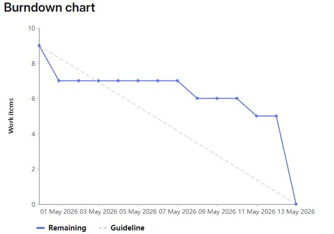

1. Información general
1.1 Autores
Gonzalo López Menor, Marcos Corrochano Arroyo, Raúl Rodriguez Santos, Alberto García Olmedilla, Diego López Nogales
1.2 Proyecto Scrum y repositorio en GitLab
https://gitlab.com/dte2026a3g02/tg3/".
1.3 Burndown chart
En este apartado se debe incrustar la imagen del diagrama Burndown final del Sprint TG3.

1.4 Presentación del trabajo
La presentación con diapositivas del trabajo TG3 se encuentra disponible en el siguiente enlace: TG3_presentacion.pdf TG3_presentacion.pptx
2. Requisitos de los prototipos a implementar
2.1 Catálogo de requisitos
| Req. | Descripcion |
|---|---|
| 01 | El prototipo debe cargar un dataset educativo en formato CSV |
| 02 | El prototipo debe identificar una variable objetivo binaria de aprobado/riesgo |
| 03 | El prototipo debe separar variables predictoras y variable objetivo |
| 04 | El prototipo debe realizar preprocesamiento de variables numéricas y categóricas |
| 05 | El prototipo debe dividir los datos en entrenamiento y prueba |
| 06 | El prototipo debe entrenar al menos un modelo de clasificación |
| 07 | El prototipo debe calcular accuracy, precision, recall y F1-score |
| 08 | El prototipo debe generar una matriz de confusión. |
| 09 | El prototipo debe medir tiempo de entrenamiento |
| 10 | El prototipo debe medir tiempo de predicción |
| 11 | El prototipo debe guardar los resultados en carpeta results |
| 12 | El prototipo debe permitir reproducir el experimento con semilla fija |
| 13 | El prototipo debe incluir instrucciones de instalación y ejecución |
| 14 | El prototipo debe registrar dependencias en requirements.txt |
| 15 | El prototipo debe permitir modificar fácilmente modelo/dataset |
3. Criterios de comparación de los prototipos
Los siguientes criterios se utilizarán para comparar de forma objetiva los dos prototipos desarrollados: el prototipo A, implementado con Scikit-learn, y el prototipo B, implementado con PyCaret. Ambos prototipos utilizan el mismo dataset, la misma transformación de la variable objetivo y el mismo planteamiento general de clasificación binaria: éxito académico o riesgo académico.
Los criterios se han definido para evaluar tanto la calidad predictiva de los modelos como el esfuerzo de desarrollo, la facilidad de instalación, la reproducibilidad y la mantenibilidad del código.
| Código | Criterio | Descripción | Tipo de valor | Forma de medición |
|---|---|---|---|---|
| C01 | Tiempo de entrenamiento del modelo | Tiempo registrado durante el proceso de entrenamiento del modelo seleccionado. En Scikit-learn se mide el entrenamiento final del modelo elegido, mientras que en PyCaret se incluye la fase automática de comparación y selección de modelos. | Numérico, segundos | Valor registrado automáticamente en los archivos de resultados de cada prototipo. |
| C02 | Tiempo de predicción | Tiempo que tarda cada prototipo en generar predicciones sobre el conjunto de prueba una vez entrenado el modelo. | Numérico, segundos | Medición automática durante la ejecución del script. |
| C03 | Exactitud del modelo | Proporción total de casos del conjunto de prueba clasificados correctamente por el modelo. | Numérico, valor entre 0 y 1 | Accuracy calculada sobre el conjunto de prueba. |
| C04 | F1-score | Métrica que combina precision y recall. Se utiliza para valorar el equilibrio del modelo al detectar la clase Riesgo. | Numérico, valor entre 0 y 1 | F1-score calculado para la clase Riesgo. |
| C05 | Precision para la clase Riesgo | Proporción de estudiantes predichos como Riesgo que realmente pertenecen a la clase Riesgo. | Numérico, valor entre 0 y 1 | Precision calculada para la clase Riesgo. |
| C06 | Recall para la clase Riesgo | Proporción de estudiantes que realmente pertenecen a la clase Riesgo y que el modelo detecta correctamente. | Numérico, valor entre 0 y 1 | Recall calculado para la clase Riesgo. |
| C07 | Líneas efectivas de código necesarias para cumplir los requisitos | Número de líneas de código necesarias para implementar la funcionalidad del prototipo, excluyendo comentarios y líneas en blanco. | Numérico, líneas efectivas de código | Conteo del archivo principal de cada prototipo. |
| C08 | Horas empleadas en el desarrollo | Tiempo estimado invertido por el equipo en implementar, probar y documentar cada prototipo. | Numérico, horas | Estimación registrada por el equipo durante el desarrollo. |
| C09 | Dificultad de instalación y configuración del entorno | Complejidad para crear el entorno, instalar dependencias y ejecutar correctamente el prototipo. | Cualitativo: Baja, Media o Alta | Valoración del equipo a partir de las incidencias encontradas durante la instalación. |
| C10 | Cantidad de código de preprocesamiento requerido | Grado de código manual necesario para preparar los datos antes del entrenamiento del modelo. | Cualitativo / Numérico | Revisión del código dedicado a limpieza, transformación y preparación de variables. |
| C11 | Facilidad de sustitución del modelo o dataset | Facilidad para cambiar el algoritmo de clasificación o adaptar el prototipo a otro dataset educativo. | Cualitativo: Baja, Media o Alta | Valoración según el número de cambios necesarios en el código. |
| C12 | Reproducibilidad del experimento | Capacidad de repetir la ejecución bajo las mismas condiciones y obtener resultados equivalentes. | Booleano: Sí / No | Uso de semilla fija en ambos prototipos: random_state=42 en Scikit-learn y session_id=42 en PyCaret. |
| C13 | Número de dependencias externas | Número de paquetes principales declarados en el archivo requirements.txt de cada prototipo. | Numérico | Conteo de dependencias principales incluidas en requirements.txt. |
| C14 | Legibilidad y mantenibilidad del código | Claridad del código, facilidad de comprensión y posibilidad de modificarlo posteriormente. | Cualitativo: Baja, Media o Alta | Valoración del equipo tras revisar la estructura y claridad de cada script. |
4. Implementación del prototipo con Scikit-learn
4.1 Enlace al prototipo A en GitLab
Toda la documentación, código fuente, dataset y resultados generados durante la implementación del prototipo A se encuentran en la siguiente carpeta del repositorio: https://gitlab.com/dte2026a3g02/tg3/-/tree/main/prototipo-A/ .
4.2 Descripción general del prototipo
El prototipo A se ha desarrollado utilizando Scikit-learn, la biblioteca de aprendizaje automático más utilizada en Python. El objetivo del prototipo es predecir si un estudiante se encuentra en situación de éxito académico (Exito) o riesgo académico (Riesgo), a partir del dataset educativo Predict Students' Dropout and Academic Success. A diferencia del prototipo B (PyCaret), en el prototipo A el pipeline completo —preprocesamiento, entrenamiento y evaluación— se construye de forma explícita mediante código Python, lo que ofrece mayor control sobre cada paso del proceso. Al igual que en el prototipo B, la variable objetivo original Target se ha transformado en una variable binaria. Los registros con valor Graduate se consideran casos de éxito académico y los registros con valor Dropout se consideran casos de riesgo académico. Los registros con valor Enrolled se han excluido del experimento, ya que representan estudiantes que aún continúan matriculados y no permiten determinar un resultado académico final. Predict Students' Dropout and Academic Success.
4.3 Estructura de la carpeta del prototipo A
La carpeta prototipo-A contiene los siguientes elementos:
| Elemento | Descripción |
|---|---|
README.md |
Documento con la descripción del prototipo, instrucciones de instalación, ejecución y explicación de los resultados generados. |
requirements.txt |
Archivo con las dependencias necesarias para ejecutar el prototipo: scikit-learn, pandas, numpy, matplotlib y joblib. |
data/data.csv |
Dataset educativo utilizado para entrenar y evaluar el modelo predictivo (separador de columnas: punto y coma). |
src/prototipo_sklearn.py |
Archivo principal del prototipo. Carga el dataset, prepara la variable objetivo, construye el pipeline de Scikit-learn, compara 13 modelos, entrena el mejor, genera predicciones y guarda todos los resultados. |
results/ |
Carpeta donde se almacenan automáticamente las métricas, tiempos de ejecución, matriz de confusión, comparación de modelos y modelo entrenado serializado. |
4.4 Funcionamiento del prototipo
El funcionamiento del prototipo sigue los siguientes pasos:
- Carga del dataset educativo desde el archivo data.csv (separador ;).
- Limpieza de los nombres de columnas (espacios y caracteres especiales).
- Filtrado de los registros para conservar únicamente las clases Graduate y Dropout.
- Creación de la variable objetivo binaria Target_binary, con las clases Exito y Riesgo.
- Separación de variables predictoras (X) y variable objetivo (y).
- División de los datos en entrenamiento (80 %) y prueba (20 %) con semilla fija (random_state=42).
- Comparación automática de 13 modelos de clasificación mediante validación cruzada de 5 folds.
- Selección del mejor modelo según la métrica F1-score ponderada.
- Entrenamiento del mejor modelo sobre todo el conjunto de entrenamiento dentro de un Pipeline con StandardScaler.
- Generación de predicciones sobre el conjunto de prueba.
- Cálculo de métricas de evaluación: accuracy, precision, recall y F1-score sobre la clase Riesgo.
- Generación y almacenamiento de la matriz de confusión (CSV y PNG).
- Medición de tiempos de entrenamiento y predicción por separado.
- Guardado del modelo entrenado y de todos los resultados en la carpeta results.
4.5 Instalación y ejecución
El prototipo A presenta una instalación más sencilla que el prototipo B en el entorno utilizado, ya que Scikit-learn no requirió cambiar la versión de Python durante las pruebas realizadas. En cambio, PyCaret sí exigió utilizar una versión compatible concreta, Python 3.10 o Python 3.11.
Desde la carpeta prototipo-A, los pasos de instalación y ejecución son los siguientes:
python -m venv .venv
.venv\Scripts\activate
python -m pip install --upgrade pip
pip install -r requirements.txt
python src/prototipo_sklearn.py
4.6 Resultados generados
Tras la ejecución del prototipo, se generaron los siguientes archivos en la carpeta results:
| Archivo generado | Contenido |
|---|---|
dataset_info_sklearn.txt |
Información general del dataset utilizado, número de filas, columnas y distribución de la variable objetivo. |
comparacion_modelos_sklearn.csv |
Tabla comparativa de los 13 modelos evaluados mediante validación cruzada, ordenados por F1-score descendente. |
metricas_sklearn.csv |
Métricas finales del mejor modelo seleccionado: accuracy, precision, recall, F1-score y tiempos. |
| matriz_confusion_sklearn.csv | Matriz de confusión en formato CSV. |
matriz_confusion_sklearn.png |
Imagen de la matriz de confusión generada durante la evaluación. |
classification_report_sklearn.txt |
Informe de clasificación completo con precision, recall y F1-score por clase. |
tiempos_sklearn.txt |
Registro de los tiempos de entrenamiento, predicción y tiempo total de ejecución. | modelo_sklearn.pkl | Modelo entrenado serializado con joblib para su posible reutilización. |
4.7 Resultados obtenidos
Durante la ejecución, el prototipo A comparó 13 modelos de clasificación mediante validación cruzada y seleccionó como mejor modelo una Logistic Regression, que obtuvo el mayor F1-score ponderado en el conjunto de entrenamiento. Los resultados obtenidos sobre el conjunto de prueba fueron los siguientes:
| Métrica | Resultado |
|---|---|
| Modelo seleccionado | Logistic Regression |
| Accuracy | 0.9421 |
| Precision para la clase Riesgo | 0.9321 |
| Recall para la clase Riesgo | 0.9190 |
| F1-score para la clase Riesgo | 0.9255 |
| Tiempo de entrenamiento | 0.0156 segundos |
| Tiempo de predicción | 0.0021 segundos |
| Tiempo total | 0.0177 segundos |
4.8 Observaciones sobre la implementación
La principal ventaja observada en el uso de Scikit-learn es el control explícito sobre cada etapa del pipeline. El desarrollador define manualmente el preprocesamiento, la partición de datos, el modelo y las métricas, lo que permite un entendimiento completo del proceso y una mayor capacidad de ajuste fino en cada paso.
Como limitación, la implementación manual requiere más tiempo de desarrollo que PyCaret para cubrir la misma funcionalidad. Sin embargo, en las pruebas realizadas la instalación de Scikit-learn resultó más sencilla, ya que no fue necesario cambiar la versión de Python del entorno. Además, los tiempos de entrenamiento y predicción del modelo final son menores. No obstante, esta comparación debe interpretarse teniendo en cuenta que el tiempo medido en Scikit-learn corresponde al entrenamiento final del modelo seleccionado, mientras que PyCaret incluye una fase adicional de comparación automática de modelos.
5. Implementación del prototipo con PyCaret
5.1 Enlace al prototipo B en GitLab
Toda la documentación, código fuente, dataset y resultados generados durante la implementación del prototipo B se encuentran en la siguiente carpeta del repositorio: https://gitlab.com/dte2026a3g02/tg3/-/tree/main/prototipo-B/ .
5.2 Descripción general del prototipo
El prototipo B se ha desarrollado utilizando PyCaret, una biblioteca de aprendizaje automático de bajo código para Python. El objetivo del prototipo es predecir si un estudiante se encuentra en situación de éxito académico o riesgo académico a partir del dataset educativo Predict Students' Dropout and Academic Success.
Para simplificar el problema y mantener una comparación equivalente con el prototipo A, se ha transformado la
variable objetivo original
Target en una variable binaria. Los registros con valor Graduate se consideran casos
de éxito académico,
mientras que los registros con valor Dropout se consideran casos de riesgo académico. Los registros
con valor
Enrolled se han excluido del experimento, ya que representan estudiantes que todavía continúan
matriculados y no permiten
determinar un resultado académico final.
El prototipo funciona como un modelo predictivo de clasificación. A partir de los datos históricos de
estudiantes incluidos
en el dataset, PyCaret entrena un modelo para aprender patrones asociados al éxito académico y al abandono.
Después, el
modelo se evalúa sobre un conjunto de prueba que no se ha utilizado durante el entrenamiento, intentando
predecir si cada
estudiante pertenece a la clase Exito o a la clase Riesgo. Como el dataset contiene el
resultado
real de cada estudiante, es posible comparar las predicciones del modelo con los valores reales y calcular
métricas como
accuracy, precision, recall y F1-score.
5.3 Estructura de la carpeta del prototipo B
La carpeta prototipo-B contiene los siguientes elementos:
| Elemento | Descripción |
|---|---|
README.md |
Documento con la descripción del prototipo, instrucciones de instalación, ejecución y explicación de los resultados generados. |
requirements.txt |
Archivo con las dependencias necesarias para ejecutar el prototipo, incluyendo PyCaret, pandas, scikit-learn, matplotlib y joblib. |
data/data.csv |
Dataset educativo utilizado para entrenar y evaluar el modelo predictivo. |
src/prototipo_pycaret.py |
Archivo principal del prototipo. Carga el dataset, prepara la variable objetivo, configura PyCaret, entrena modelos, genera predicciones y guarda los resultados. |
results/ |
Carpeta donde se almacenan automáticamente las métricas, tiempos de ejecución, matriz de confusión, comparación de modelos y modelo entrenado. |
5.4 Funcionamiento del prototipo
El funcionamiento del prototipo sigue los siguientes pasos:
- Carga del dataset educativo desde el archivo
data.csv. - Limpieza básica de los nombres de columnas.
- Filtrado de los registros para conservar únicamente las clases
GraduateyDropout. - Creación de la variable objetivo binaria
Target_binary, con las clasesExitoyRiesgo. - Configuración del experimento de clasificación con PyCaret.
- Comparación automática de distintos modelos de clasificación.
- Selección del mejor modelo según la métrica F1-score.
- Generación de predicciones sobre el conjunto de prueba.
- Cálculo de métricas de evaluación: accuracy, precision, recall y F1-score.
- Generación y almacenamiento de la matriz de confusión.
- Medición de tiempos de configuración, entrenamiento y predicción.
- Guardado del modelo entrenado y de todos los resultados en la carpeta
results.
5.5 Instalación y ejecución
Para ejecutar el prototipo B se recomienda utilizar Python 3.10 o Python 3.11, ya que PyCaret 3.3.2 no es compatible con Python 3.12.
Desde la carpeta prototipo-B, los pasos de instalación y ejecución son los siguientes:
python -m venv .venv
.venv\Scripts\activate
python -m pip install --upgrade pip
pip install -r requirements.txt
python src/prototipo_pycaret.py5.6 Resultados generados
Tras la ejecución del prototipo, se generaron los siguientes archivos en la carpeta results:
| Archivo generado | Contenido |
|---|---|
dataset_info_pycaret.txt |
Información general del dataset utilizado, número de filas, columnas y distribución de la variable objetivo. |
comparacion_modelos_pycaret.csv |
Tabla comparativa de los modelos evaluados automáticamente por PyCaret. |
metricas_pycaret.csv |
Métricas finales del mejor modelo seleccionado. |
matriz_confusion_pycaret.csv |
Matriz de confusión en formato CSV. |
matriz_confusion_pycaret.png |
Imagen de la matriz de confusión generada durante la evaluación. |
modelo_pycaret.pkl |
Modelo entrenado guardado para su posible reutilización. |
tiempos_pycaret.txt |
Registro de los tiempos de configuración, entrenamiento, predicción y ejecución total. |
5.7 Resultados obtenidos
Durante la ejecución, PyCaret comparó automáticamente varios modelos de clasificación y seleccionó como mejor modelo una regresión logística. Los resultados obtenidos por el prototipo B fueron los siguientes:
| Métrica | Resultado |
|---|---|
| Modelo seleccionado | Logistic Regression |
| Accuracy | 0.9421 |
| Precision para la clase Riesgo | 0.9321 |
| Recall para la clase Riesgo | 0.9190 |
| F1-score para la clase Riesgo | 0.9255 |
| Tiempo de configuración | 0.6938 segundos |
| Tiempo de entrenamiento/comparación | 11.9342 segundos |
| Tiempo de predicción | 0.1494 segundos |
| Tiempo total | 12.7774 segundos |
5.8 Observaciones sobre la implementación
La principal ventaja observada en el uso de PyCaret es la automatización del flujo de trabajo de aprendizaje automático. Con pocas líneas de código, la biblioteca permite configurar el experimento, realizar el preprocesamiento, comparar modelos, seleccionar el mejor clasificador y generar predicciones. Esto reduce el esfuerzo de desarrollo frente a una implementación manual.
Como limitación, PyCaret ofrece menos control detallado sobre algunas fases internas del proceso, ya que muchas tareas se ejecutan de forma automática. Además, requiere una versión compatible de Python, en este caso Python 3.10 o 3.11, y puede generar advertencias relacionadas con dependencias opcionales no instaladas. Estas advertencias no impidieron la ejecución correcta del prototipo.
6. Comparación de los prototipos
En este apartado se comparan los dos prototipos desarrollados a partir de los criterios definidos en el apartado 3. La comparación se realiza sobre prototipos equivalentes, ya que ambos utilizan el mismo dataset educativo, la misma transformación de la variable objetivo y el mismo planteamiento general de clasificación binaria: éxito académico o riesgo académico. El prototipo A se ha implementado con Scikit-learn, mientras que el prototipo B se ha implementado con PyCaret. Ambos seleccionaron Logistic Regression como mejor modelo tras comparar automáticamente múltiples clasificadores.
6.1 Tabla comparativa según los criterios definidos
| Criterio | Prototipo A: Scikit-learn | Prototipo B: PyCaret | Comentarios |
|---|---|---|---|
| Tiempo de entrenamiento del modelo | 0.0156 segundos | 11.9342 segundos | El prototipo A registra el tiempo de entrenamiento final del modelo seleccionado con Scikit-learn. En cambio, el valor del prototipo B incluye la comparación automática de múltiples modelos mediante PyCaret. Por tanto, este criterio muestra que Scikit-learn es más rápido en el ajuste final del modelo, mientras que PyCaret incorpora en ese tiempo una fase adicional de automatización y selección de modelos. |
| Tiempo de predicción | 0.0021 segundos | 0.1494 segundos |
El prototipo A realiza la predicción directamente sobre el pipeline entrenado, mientras que PyCaret
utiliza la función
predict_model(), que añade una capa adicional de abstracción. Por ello, Scikit-learn obtiene
un tiempo de
predicción inferior, aunque ambos tiempos son bajos para el tamaño del conjunto de prueba utilizado.
|
| Exactitud del modelo | 0.9421 | 0.9421 | Ambos prototipos obtienen exactamente la misma exactitud, lo que refuerza que el experimento es equivalente y reproducible con los mismos datos, semilla y partición. |
| F1-score | 0.9255 | 0.9255 | El F1-score es idéntico en ambos prototipos, lo que indica que ambos detectan el riesgo académico con el mismo equilibrio entre precisión y recall. |
| Precision para la clase Riesgo | 0.9321 | 0.9321 | La precisión coincide en ambos prototipos. Ambos reducen de forma equivalente los falsos positivos en la identificación de estudiantes con riesgo de abandono. |
| Recall para la clase Riesgo | 0.9190 | 0.9190 | El recall es también idéntico, confirmando que ambos prototipos detectan la misma proporción de estudiantes reales en situación de riesgo académico. |
| Líneas de código necesarias para cumplir los requisitos | 175 líneas | 109 líneas | En los scripts desarrollados, el prototipo B con PyCaret requiere menos líneas de código que el prototipo A con Scikit-learn. Esta diferencia se debe a que PyCaret automatiza parte del flujo de trabajo de aprendizaje automático, como la configuración del experimento, el preprocesamiento, la comparación de modelos y la selección del mejor clasificador. En cambio, Scikit-learn requiere más código explícito, pero ofrece mayor control sobre cada fase del proceso. |
| Horas empleadas en el desarrollo | 3 horas | 1,5 horas | PyCaret redujo a la mitad el tiempo de desarrollo gracias a la automatización del pipeline. Scikit-learn requirió mayor tiempo de codificación al construir manualmente cada componente del proceso. |
| Dificultad de instalación y configuración del entorno | Baja | Media | Scikit-learn es compatible con Python 3.9 o superior sin restricciones adicionales. PyCaret requiere específicamente Python 3.10 o 3.11, ya que no es compatible con Python 3.12, lo que añade complejidad a la configuración del entorno. |
| Cantidad de código de preprocesamiento requerido | Alta (~20 líneas explícitas) | Baja (automático) | En Scikit-learn el preprocesamiento se define explícitamente con StandardScaler dentro de un Pipeline. PyCaret automatiza esta fase internamente, por lo que el código necesario para preparar los datos es mínimo. |
| Facilidad de sustitución del modelo o dataset | Alta | Media-Alta | En Scikit-learn basta con sustituir el estimador en el Pipeline (1 línea). En PyCaret es también sencillo, aunque el control interno del pipeline es menor y algunos ajustes requieren conocer la API específica de la biblioteca. |
| Reproducibilidad del experimento | Sí | Sí | Ambos prototipos utilizan semilla fija (random_state=42 / session_id=42), lo que garantiza resultados idénticos en ejecuciones consecutivas bajo las mismas condiciones. |
| Número de dependencias externas | 5 dependencias | 5 dependencias principales | Ambos prototipos declaran 5 paquetes en requirements.txt. Sin embargo, PyCaret instala internamente un número mucho mayor de subdependencias, lo que incrementa el tamaño del entorno virtual y el tiempo de instalación. |
| Legibilidad y mantenibilidad del código | Alta | Media-Alta | El código del prototipo A es explícito y fácil de seguir paso a paso. El del prototipo B es más breve, pero parte del funcionamiento interno queda abstraído por PyCaret, lo que puede dificultar la comprensión y el mantenimiento sin conocimiento previo de la biblioteca. |
6.2 Comparación
El resultado más destacado de la comparación es que ambos prototipos obtienen métricas de clasificación idénticas: accuracy de 0.9421, F1-score de 0.9255, precision de 0.9321 y recall de 0.9190 para la clase Riesgo. Esto indica que ambos prototipos han resuelto el mismo problema predictivo de forma equivalente en este experimento, utilizando los mismos datos, la misma transformación de la variable objetivo, la misma semilla y el mismo tipo de modelo final.
Donde sí se observan diferencias relevantes es en el rendimiento computacional. El prototipo A registra un tiempo de entrenamiento final de 0.0156 segundos, frente a los 11.9342 segundos del prototipo B. Esta diferencia debe interpretarse con cautela, ya que PyCaret incluye en ese tiempo la comparación automática de múltiples clasificadores, mientras que Scikit-learn mide únicamente el entrenamiento final del modelo seleccionado. Por tanto, cuando el modelo ya está decidido y se busca entrenarlo de forma eficiente, Scikit-learn ofrece una ventaja clara en tiempo de ajuste final.
En cuanto al esfuerzo de desarrollo, PyCaret redujo el tiempo estimado necesario para implementar el prototipo (1,5 horas frente a 3 horas), principalmente por la automatización de tareas como la configuración del experimento, el preprocesamiento, la comparación de modelos y parte del flujo de trabajo de evaluación. Como contrapartida, ofrece menos control sobre el proceso interno. Scikit-learn requiere más código explícito, pero proporciona mayor transparencia, flexibilidad y control sobre cada fase del pipeline, además de haber presentado una instalación más sencilla en este caso concreto.
7. Conclusiones
A partir de la implementación y comparación de los dos prototipos, el grupo extrae las siguientes conclusiones sobre el uso de Scikit-learn y PyCaret para el desarrollo de modelos de clasificación en un contexto educativo. En términos de calidad predictiva, ambas tecnologías producen resultados equivalentes cuando se aplican al mismo problema con los mismos datos y la misma semilla. La elección de la tecnología no condiciona la capacidad del modelo para predecir el riesgo académico, siempre que se seleccione un algoritmo adecuado. En este caso, ambos prototipos coincidieron en seleccionar la Regresión Logística como mejor clasificador, lo que refuerza la equivalencia del experimento. En cuanto a la velocidad de desarrollo, PyCaret supone una ventaja clara para prototipado rápido. Automatiza el preprocesamiento, la comparación de modelos y la generación de resultados con pocas líneas de código, lo que lo hace especialmente útil cuando el objetivo es explorar rápidamente qué modelo funciona mejor sobre un nuevo dataset. El tiempo de desarrollo se redujo a la mitad respecto a Scikit-learn. Sin embargo, Scikit-learn ofrece mayor control y transparencia. Al construir el pipeline de forma explícita, el desarrollador comprende y controla cada paso del proceso, lo que facilita la depuración, el ajuste fino y la adaptación a requisitos específicos. Además, Scikit-learn es compatible con versiones más recientes de Python y genera entornos virtuales más ligeros, sin las restricciones de compatibilidad que presenta PyCaret. En cuanto al rendimiento computacional, Scikit-learn es significativamente más rápido tanto en entrenamiento como en predicción cuando se compara de forma aislada. No obstante, hay que tener en cuenta que el tiempo medido en PyCaret incluye la comparación automática de múltiples modelos, lo que no es un tiempo de entrenamiento puro sino un proceso de selección de modelo. En conclusión, PyCaret es más adecuado para fases de exploración y prototipado rápido, mientras que Scikit-learn resulta más apropiado para proyectos en producción donde se requiere control, eficiencia y compatibilidad con entornos variados. La elección entre una y otra tecnología dependerá del contexto, el perfil del equipo y los objetivos del proyecto.
8. Aspectos complementarios
8.1. Compatibilidad con Google Colab
El prototipo A (Scikit-learn) incluye compatibilidad con Google Colab. El script detecta automáticamente si se ejecuta en un entorno sin acceso a __file__ (como Colab) y utiliza el directorio de trabajo actual como base. Esto permite ejecutar el prototipo directamente en la nube sin modificar el código, facilitando la reproducibilidad del experimento en entornos distintos al local.
8.2. Comparación automática de 13 modelos en el prototipo A
Una característica destacada del prototipo A es que, al igual que PyCaret, compara automáticamente 13 clasificadores distintos mediante validación cruzada de 5 folds, ordenando los resultados por F1-score para seleccionar el mejor modelo. Los modelos evaluados incluyen Logistic Regression, Random Forest, Gradient Boosting, Extra Trees, AdaBoost, Ridge Classifier, LDA, SVM lineal, QDA, Decision Tree, KNN, Naive Bayes y un clasificador ficticio (Dummy). Esta funcionalidad replica el comportamiento de PyCaret de forma transparente y controlada, permitiendo una comparación más justa entre ambas tecnologías.
8.3 Informe de utilización de LLMs
Durante el desarrollo del TG3 se han utilizado herramientas de inteligencia artificial generativa como apoyo para la planificación del trabajo, la redacción inicial de apartados del informe, la explicación de errores técnicos, la generación de estructuras de código y la revisión de la coherencia entre requisitos, prototipos y criterios de comparación.
El uso de LLMs no sustituyó la ejecución ni validación de los prototipos. Los resultados incluidos en el informe proceden de la ejecución real de los scripts desarrollados por el grupo. El equipo revisó y adaptó las propuestas generadas, comprobando que fueran coherentes con el enunciado, con los trabajos TG1 y TG2 y con los resultados obtenidos.
8.4 Relación con casos de cursos pasados
Como referencia se han tenido en cuenta trabajos de cursos anteriores relacionados con la comparación de tecnologías, especialmente casos como NLTK frente a spaCy, TensorFlow frente a PyTorch y OutSystems frente a AppSheet. Estos ejemplos sirvieron para orientar la estructura comparativa del trabajo, la separación entre prototipos y la importancia de comparar tecnologías bajo requisitos funcionales equivalentes.
A diferencia de esos casos, este TG3 se centra en la comparación práctica de dos bibliotecas de machine learning aplicadas al dominio educativo. La referencia principal tomada de esos trabajos ha sido la necesidad de definir requisitos comunes, ejecutar prototipos comparables y justificar la elección final mediante criterios medibles.
9. Anexos
Anexo 1: Comparación completa de modelos — Prototipo A (Scikit-learn)
La siguiente tabla muestra los resultados de la comparación automática de los 13 modelos evaluados en el prototipo A mediante validación cruzada de 5 folds, ordenados por F1-score descendente:
| Modelo | Accuracy | Recall | Precision | F1 | Tiempo (s) |
|---|---|---|---|---|---|
| Logistic Regression | 0.9067 | 0.9067 | 0.9080 | 0.9056 | 0.504 |
| SVM - Linear Kernel | 0.9053 | 0.9053 | 0.9073 | 0.9040 | 0.478 |
| Random Forest Classifier | 0.9008 | 0.9008 | 0.9033 | 0.8994 | 8.194 |
| Extra Trees Classifier | 0.9001 | 0.9001 | 0.9030 | 0.8985 | 6.196 |
| Ada Boost Classifier | 0.8988 | 0.8988 | 0.9002 | 0.8975 | 5.686 |
| Gradient Boosting Classifier | 0.8974 | 0.8974 | 0.8985 | 0.8962 | 14.983 |
| Ridge Classifier | 0.8964 | 0.8964 | 0.9000 | 0.8944 | 0.391 |
| Linear Discriminant Analysis | 0.8957 | 0.8957 | 0.8991 | 0.8938 | 0.569 |
| Quadratic Discriminant Analysis | 0.8616 | 0.8616 | 0.8610 | 0.8605 | 0.376 |
| Naive Bayes | 0.8430 | 0.8430 | 0.8428 | 0.8409 | 0.251 |
| Decision Tree Classifier | 0.8409 | 0.8409 | 0.8413 | 0.8410 | 0.653 |
| K Neighbors Classifier | 0.8450 | 0.8450 | 0.8525 | 0.8399 | 0.410 |
| Dummy Classifier | 0.6085 | 0.6085 | 0.3702 | 0.4604 | 0.210 |
Anexo 2: Información del dataset
Ambos prototipos utilizan el mismo dataset educativo Predict Students' Dropout and Academic Success, con las siguientes características tras el filtrado de registros:
| Parámetro | Valor |
|---|---|
| Filas utilizadas | 3630 |
| Columnas (variables predictoras + objetivo) | 37 |
| Variable objetivo | Target_binary |
| Clase Exito (Graduate) | 2.209 registros (60,9 %) |
| Clase Riesgo (Dropout) | 1.421 registros (39,1 %) |
| Registros excluidos (Enrolled) | 794 registros |
| Partición entrenamiento / prueba | 80 % / 20 % (semilla 42) |
Anexo 3: Trazabilidad de requisitos frente a los prototipos
La siguiente tabla muestra la correspondencia entre los requisitos definidos en el apartado 2 y su cumplimiento en los dos prototipos implementados. El objetivo de este anexo es justificar que la comparación realizada en el apartado 6 se basa en prototipos funcionalmente equivalentes.
| Req. | Descripción | Prototipo A Scikit-learn |
Prototipo B PyCaret |
Evidencia |
|---|---|---|---|---|
| 01 | Cargar un dataset educativo en formato CSV | Sí | Sí | data/data.csv en ambos prototipos |
| 02 | Identificar una variable objetivo binaria de aprobado/riesgo | Sí | Sí | Transformación de Target a Target_binary |
| 03 | Separar variables predictoras y variable objetivo | Sí | Sí | Scripts principales de ambos prototipos |
| 04 | Realizar preprocesamiento de variables numéricas y categóricas | Sí | Sí | Pipeline de Scikit-learn / preprocesamiento automático de PyCaret |
| 05 | Dividir los datos en entrenamiento y prueba | Sí | Sí | Partición 80 % / 20 % con semilla fija |
| 06 | Entrenar al menos un modelo de clasificación | Sí | Sí | Modelo final seleccionado: Logistic Regression |
| 07 | Calcular accuracy, precision, recall y F1-score | Sí | Sí | metricas_sklearn.csv / metricas_pycaret.csv |
| 08 | Generar una matriz de confusión | Sí | Sí | matriz_confusion_sklearn.* / matriz_confusion_pycaret.* |
| 09 | Medir tiempo de entrenamiento | Sí | Sí | tiempos_sklearn.txt / tiempos_pycaret.txt |
| 10 | Medir tiempo de predicción | Sí | Sí | tiempos_sklearn.txt / tiempos_pycaret.txt |
| 11 | Guardar los resultados en carpeta results | Sí | Sí | Carpeta results/ en ambos prototipos |
| 12 | Permitir reproducir el experimento con semilla fija | Sí | Sí | random_state=42 / session_id=42 |
| 13 | Incluir instrucciones de instalación y ejecución | Sí | Sí | README.md de cada prototipo |
| 14 | Registrar dependencias en requirements.txt | Sí | Sí | requirements.txt en ambos prototipos |
| 15 | Permitir modificar fácilmente modelo o dataset | Sí | Sí | Estructura modular y uso de scripts principales reutilizables |
Como puede observarse, ambos prototipos cumplen los mismos requisitos funcionales definidos por el grupo. Esto permite considerar que la comparación posterior entre Scikit-learn y PyCaret se ha realizado sobre una base equivalente y, por tanto, resulta válida desde el punto de vista metodológico.
Anexo 4: Evidencias de evaluación y matrices de confusión
En este anexo se recogen las principales evidencias visuales generadas durante la evaluación de los prototipos. En ambos casos se obtuvo la misma matriz de resultados globales, ya que los dos prototipos seleccionaron el mismo modelo final y trabajaron con la misma partición de entrenamiento y prueba.
| Elemento | Prototipo A: Scikit-learn | Prototipo B: PyCaret |
|---|---|---|
| Matriz de confusión (CSV) | results/matriz_confusion_sklearn.csv |
results/matriz_confusion_pycaret.csv |
| Matriz de confusión (PNG) | results/matriz_confusion_sklearn.png |
results/matriz_confusion_pycaret.png |
| Informe de clasificación | results/classification_report_sklearn.txt |
No generado por separado |
| Métricas finales | results/metricas_sklearn.csv |
results/metricas_pycaret.csv |
| Tiempos de ejecución | results/tiempos_sklearn.txt |
results/tiempos_pycaret.txt |
Las matrices de confusión y los archivos de métricas generados permiten comprobar visualmente que ambos prototipos clasifican de forma equivalente los casos de éxito académico y riesgo académico. Esta evidencia complementa la tabla comparativa del apartado 6 y refuerza la reproducibilidad del experimento.
Anexo 5: Trazabilidad de criterios de comparación con evidencias
La siguiente tabla relaciona cada criterio de comparación definido en el apartado 3 con la evidencia concreta utilizada para medirlo en ambos prototipos. De esta forma se justifica que los valores comparados en el apartado 6 no son estimaciones arbitrarias, sino resultados derivados de archivos, scripts y observaciones documentadas durante el desarrollo.
| Código | Criterio | Evidencia en Prototipo A | Evidencia en Prototipo B |
|---|---|---|---|
| C01 | Tiempo de entrenamiento del modelo | results/tiempos_sklearn.txt |
results/tiempos_pycaret.txt |
| C02 | Tiempo de predicción | results/tiempos_sklearn.txt |
results/tiempos_pycaret.txt |
| C03 | Exactitud del modelo | results/metricas_sklearn.csv |
results/metricas_pycaret.csv |
| C04 | F1-score | results/metricas_sklearn.csv |
results/metricas_pycaret.csv |
| C05 | Precision para la clase Riesgo | results/metricas_sklearn.csv |
results/metricas_pycaret.csv |
| C06 | Recall para la clase Riesgo | results/metricas_sklearn.csv |
results/metricas_pycaret.csv |
| C07 | Líneas efectivas de código necesarias | src/prototipo_sklearn.py |
src/prototipo_pycaret.py |
| C08 | Horas empleadas en el desarrollo | Estimación registrada por el equipo | Estimación registrada por el equipo |
| C09 | Dificultad de instalación y configuración | README.md + pruebas del equipo |
README.md + pruebas del equipo |
| C10 | Cantidad de código de preprocesamiento requerido | src/prototipo_sklearn.py |
src/prototipo_pycaret.py |
| C11 | Facilidad de sustitución del modelo o dataset | Estructura del pipeline y script principal | Configuración del experimento en PyCaret |
| C12 | Reproducibilidad del experimento | random_state=42 |
session_id=42 |
| C13 | Número de dependencias externas | requirements.txt |
requirements.txt |
| C14 | Legibilidad y mantenibilidad del código | Revisión del script principal y su estructura | Revisión del script principal y su estructura |
Este anexo permite enlazar de forma directa la definición de los criterios con las evidencias reales del proyecto, reforzando la trazabilidad del trabajo y la coherencia entre requisitos, implementación, medición y conclusiones.